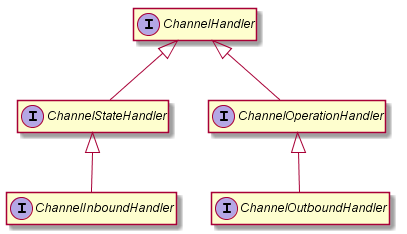
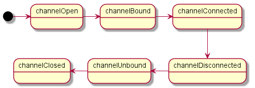
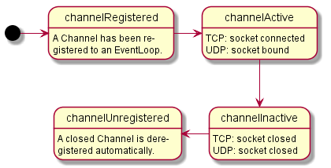
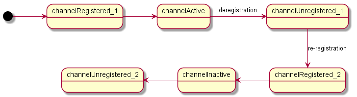
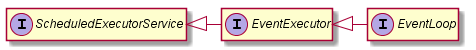

General Actions:
New and Noteworthy
This document walks you through the list of notable changes and new features in the major Netty release to give you an idea to port your application to the new version.
- Changes in 4.0
- Project structure changes
- OSGI-fy
- Method-Chaining all the way
- Buffer API changes
- Pooled ByteBuf
- Channel API changes
- Revamped ChannelHandler interface
- Sensible and less error-prone inbound traffic suspension
- Half-closed sockets
- Flexible I/O thread allocation
- Ability to create a Channel from an existing JDK socket
- Deregistration and re-registraion of a Channel from·to an I/O thread
- Scheduling an arbitrary task to be run by an I/O thread
- Simplified shutdown
- Type-safe ChannelOptions
- Read modes
- AttributeMap
- New bootstrap API
- ChannelFuture split to ChannelFuture and ChannelPromise
- Well-defined thread model
- Codec framework changes
- Changes in transport implementations
- Case study: porting the Factorial example
Changes in 4.0
Project structure changes
The package name of Netty has been changed from org.jboss.netty to io.netty since we are not part of JBoss.org anymore.
The binary JAR has been split into multiple submodules so that a user can exclude unnecessary features from the class path. The current structure looks like this following:
netty/
common/ - utility and logging
buffer/ - buffer API
transport/ - channel API and its core implementations
transport-rtrx/ - RTRX transport implementation
transport-sctp/ - SCTP transport implementation
transport-udt/ - UDT transport implementation
handler/ - channel handlers
codec/ - codec framework
codec-http/ - HTTP, Web Sockets, SPDY, and RTSP codec
example/ - examples
all/ - generates an all-in-one JAR
tarball/ - generates a tarball distribution
common/ - utility and logging
buffer/ - buffer API
transport/ - channel API and its core implementations
transport-rtrx/ - RTRX transport implementation
transport-sctp/ - SCTP transport implementation
transport-udt/ - UDT transport implementation
handler/ - channel handlers
codec/ - codec framework
codec-http/ - HTTP, Web Sockets, SPDY, and RTSP codec
example/ - examples
all/ - generates an all-in-one JAR
tarball/ - generates a tarball distribution
If a user prefers the old all-in-one JAR, it's not deprecated but provided as before as a Maven repository artifact (io.netty:netty-all:jar)
OSGI-fy
All Netty jars (except of the netty-all) are now OSGI bundles and can be used in your favorite OSGI-Container.
Method-Chaining all the way
Most of operations in Netty now support method chaining to make the usage less cumbersome.
Buffer API changes
ChannelBuffer → ByteBuf
Thanks to the structural changes mentioned above, the buffer API can be used as a separate package. Therefore, the type name ChannelBuffer does not make sense anymore, and has been renamed to ByteBuf.
The utility class ChannelBuffers, which creates a new buffer, has been split into two utility classes, Unpooled and ByteBufUtil. As can be guessed from its name, 4.0 introduced pooled ByteBufs which can be allocated via the ByteBufAllocator implementations.
Most buffers are dynamic with configurable maximum capacity
In 3.x, buffers were fixed or dynamic. The capacity of a fixed buffer does not change once it is created while the capacity of a dynamic buffer changes whenever write*(...) method requires more space.
Since 4.0, all buffers are dynamic. However, it's better than the old dynamic. You can decrease or increase the capacity of a buffer more easily and more safely. It's easy because there is a new method ByteBuf.capacity(int newCapacity). It's safe because you can set the maximum capacity of a buffer so that it does not grow boundlessly.
| 1 2 3 4 5 6 7 8 9 |
|
The only exception is the buffer which wraps a single buffer or a single byte array, created by wrappedBuffer(). You cannot increase its capacity because it invalidates the whole point of wrapping an existing buffer - saving memory copies. If you want to change the capacity after you wrap a buffer, you should just create a new buffer with enough capacity and copy the buffer you wanted to wrap.
New interface: CompositeByteBuf
A new interface named CompositeByteBuf defines various advanced operations for composite buffer implementations. A user can save bulk memory copy operations using a composite buffer at the cost of relatively expensive random access. To crease a new composite buffer, use either ByteBuf.wrappedBuffer(...) like before or ByteBuf.compositeBuffer(...).
Predictable NIO buffer conversion
The contract of ChannelBuffer.toByteBuffer() and its variants were not deterministic enough in 3.x. It was impossible for a user to know if they will return a view buffer with shared data or a copied buffer with separate data. 4.0 replaces toByteBuffer() with ByteBuf.hasNioBuffer() and ByteBuf.nioBuffer() which are similar to hasArray() and array(). If hasNioBuffer() returns false, a user can always get a copied buffer by calling copy().nioBuffer().
Little endian support changes
Little endian support has been changed significantly. Previously, a user was supposed to specify a LittleEndianHeapChannelBufferFactory or wrap an existing buffer with the desired byte order to get a little endian buffer. 4.0 adds a new method: ByteBuf.order(ByteOrder). It returns a view of the callee with the desired byte order:
| 1 2 3 4 5 6 7 8 9 10 11 12 13 14 15 |
|
Pooled ByteBuf
As mentioned before Netty 4 introduced pooled ByteBuf instances. This can be useful for many reasons, to list a few:
- Limit GC pressure because of heavy allocation/deallocation when using unpooled ByteBufs
- Better handling of direct (native) ByteBuf
These Bytebufs can be obtained using the ByteBufAllocator.
| 1 2 3 4 5 6 7 8 9 10 11 12 13 14 15 16 17 18 19 20 |
|
Using the ByteBuffAllocator is quite easy, just access it via ChannelHandlerContext.alloc() or Channel.alloc() like show bellow.
| 1 2 3 4 5 6 7 8 9 |
|
Once the ByteBuf was written to the remote peer it will automatically get released to the pool again.
If they ByteBuf instances are pooled or not depends on the implementation of the used ByteBufAllocator. By default Netty uses pooled ByteBufs via PooledByteBufAllocator, but you can adjust this by set UnpooledByteBufAllocator either on the ChannelConfig of the Channel or directly on the Bootstrap/ServerBootstrap to make it global for all Channels there.
Channel API changes
In 4.0, many classes under the io.netty.channel package has gone through a major overhaul, and thus simple text search-and-replace will not make your 3.x application work with 4.0. This section will try to show the thought process behind such a big change, rather than being an exhaustive resource for all the changes.
Revamped ChannelHandler interface
Upstream → Inbound, Downstream → Outbound
The terms 'upstream' and 'downstream' was pretty confusing to beginners. 4.0 use 'inbound' and 'outbound' wherever possible.
New ChannelHandler hierarchy
In 3.x, ChannelHandler was just a tag interface, and ChannelUpstreamHandler, ChannelDownstreamHandler, and LifeCycleAwareChannelHandler defined the actual handler methods. In Netty 4, ChannelHandler merges LifeCycleAwareChannelHandler along with a couple more methods which is going to be useful to any handler implementations:
| 1 2 3 4 5 6 7 8 9 10 11 |
|
The following diagram depicts the new type hierarchy:

ChannelHandler with no event object
In 3.x, every I/O operation created a ChannelEvent object. For each read / write, it additionally created a new ChannelBuffer. It simplified the internals of Netty quite a lot because it delegates resource management and buffer pooling to JVM. However, it often was the root cause of the GC pressure and uncertainty which are sometimes observed in a Netty-based application under high load.
4.0 removes event object creation completely by replacing the event objects with strongly typed method invocations. 3.x has catch-all event handler methods such as handleUpstream() and handleDownstream(), but it's not the case anymore. Every event type has its own handler method now:
| 1 2 3 4 5 6 7 8 9 10 11 12 13 14 15 16 17 18 19 20 21 |
|
ChannelHandlerContext also has been changed to reflect the changed mentioned above:
| 1 2 3 4 5 |
|
All these changes mean a user cannot extend the non-existing ChannelEvent interface anymore. How do the user define his or her own event type such as IdleStateEvent? ChannelHandler in 4.0 has a handler method called userEventTriggered() which is dedicated to this specific user case.
Simplified channel state model
When a new connected Channel is created in 3.x, at least three ChannelStateEvent is triggered: channelOpen, channelBound, and channelConnected. When a Channel is closed, it's channelDisconnected, channelUnbound, and channelClosed.

However, it's of dubious value to trigger that many events. It is more useful for a user to get notified when a Channel enters the state where it can perform reads and writes.

channelOpen, channelBound, and channelConnected are merged to channelActive. channelDisconnected, channelUnbound, and channelClosed are merged to channelInactive. Likewise, Channel.isBound() and isConnected() are merged to isActive().
Note that channelRegistered and channelUnregistered are not equivalent to channelOpen and channelClosed. They are new states introduced to support dynamic registration, deregistration, and re-registration of a Channel, as illustrated below:

Per-handler buffer
Unlike 3.x, which creates a new heap buffer on every read operation to trigger a upstream MessageEvent, 4.0 does not create a new buffer every time. It reads data from a socket directly into the inbound buffer created by user's ChannelInboundHandler implementation.
Because the inbound buffer created by the ChannelInboundHandler is reused until the associated channel is closed, the GC overhead and the memory bandwidth consumption stays minimal. Also, a user has complete control over when the received data is discarded, the codec implementation becomes much simpler and efficient.
Similarly, it is not Netty that creates an outbound buffer. User's ChannelOutboundHandler does.
To make this efficient and terms of memory and GC the used buffer will be released automatically once either of these is true:
- The Channel is closed
- The ChannelHandler was removed from the ChannelPipeline
Not necessarily one event per message
4.0 does not have messageReceived or writeRequested handler method anymore. They are replaced with inboundBufferUpdated and flush. A user enqueues one or more messages to an inbound (or outbound) buffer and triggers an inboundBufferUpdated (or flush) event.
| 1 2 3 4 5 6 7 8 9 10 11 12 13 14 15 16 17 18 19 20 21 22 23 24 25 26 27 |
|
Alternatively, a user can trigger such event for every single inbound (or outbound) message to emulate the old behavior although it might be less efficient than the new way.
Message handler vs. Byte handler
In 3.x, a MessageEvent holds an arbitrary object. It can be either a ChannelBuffer or a user-defined object and they are treated same:
| 1 2 3 4 5 6 7 8 9 10 11 |
|
In 4.0, they are treated differently since a handler does not handle an individual message but handles multiple messages:
| 1 2 3 4 5 6 7 8 9 10 11 12 13 14 15 |
|
You might find it interesting that a ServerChannel's handler is an inbound handler whose inbound buffer is Queue<Channel>.
Handler adapters
Most users will find creating and managing its life cycle tedious, and therefore a user is supposed to extend the predefined adapter classes to make their life easier:
- ChannelInboundMessageHandlerAdapter
- ChannelInboundByteHandlerAdapter
- ChannelOutboundMessageHandlerAdapter
- ChannelOutboundByteHandlerAdapter
- ChannelDuplexHandler
Sensible and less error-prone inbound traffic suspension
3.x had an unintuitive inbound traffic suspension mechanism provided by Channel.setReadable(boolean). It introduced complicated interactions between ChannelHandlers and the handlers were easy to interfere with each other if implemented incorrectly.
In 4.0, each ChannelHandler is given with its own boolean flag called 'readable' in its ChannelHandlerContext. The flag tells if the handler wants Netty to read inbound traffic or not. It works like a consensus system. If any of the boolean flags in the pipeline is set to false, Netty will suspend read operation. If all of the boolean flags in the pipeline are set to true, Netty will resume read operation.
Suspension of accepting incoming connections
There was no way for a user to tell Netty 3.x to stop accepting incoming connections except for blocking the I/O thread or closing the server socket. 4.0 respects the 'readable' flag to suspend and resume accepting incoming connections.
Half-closed sockets
TCP and SCTP allow a user to shut down the outbound traffic of a socket without closing it completely. Such a socket is called 'a half-closed socket', and a user can make a half-closed socket by calling SocketChannel.shutdownOutput() method. If a remote peer shuts down the outbound traffic, SocketChannel.read(..) will return -1, which was seemingly indistinguishable from a closed connection.
3.x did not have shutdownOutput() operation. Also, it always closed the connection when SocketChannel.read(..) returns -1.
To support a half-closed socket, 4.0 adds SocketChannel.shutdownOutput() method, and a user can set the 'ALLOW_HALF_CLOSURE' ChannelOption to prevent Netty from closing the connection automatically even if SocketChannel.read(..) returns -1.
Flexible I/O thread allocation
In 3.x, a Channel is created by a ChannelFactory and the newly created Channel is automatically registered to a hidden I/O thread. 4.0 replaces ChannelFactory with a new interface called EventLoopGroup which consists of one or more EventLoops. Also, a new Channel is not registered to the EventLoopGroup automatically but a user has to call EventLoopGroup.register() explicitly.
Thanks to this change (i.e. separation of ChannelFactory and I/O threads), a user can register different Channel implementations to the same EventLoopGroup, or same Channel implementations to different EventLoopGroups. For example, you can run a NIO server socket, NIO client sockets, NIO UDP sockets, and in-VM local channels in the same I/O thread. It should be very useful when writing a proxy server which requires minimal latency.
Ability to create a Channel from an existing JDK socket
3.x provided no way to create a new Channel from an existing JDK socket such as java.nio.channels.SocketChannel. You can with 4.0.
Deregistration and re-registraion of a Channel from·to an I/O thread
Once a new Channel is created in 3.x, it is completely tied to a single I/O thread until its underlying socket is closed. In 4.0, a user can deregister a Channel from its I/O thread to gain the full control of its underlying JDK socket. For example, you can take advantage of high-level non-blocking I/O Netty provides to deal with complex protocols, and then later deregister the Channel and switch to blocking mode to transfer a file at possible maximum throughput. Of course, it is possible to register the deregistered Channel back again.
| 1 2 3 4 5 6 7 8 9 10 11 12 13 14 15 16 17 18 19 20 21 22 |
|
Scheduling an arbitrary task to be run by an I/O thread
When a Channel is registered to an EventLoopGroup, the Channel is actually registered to one of the EventLoops which is managed by the EventLoopGroup. EventLoop implements java.util.concurrent.ScheduledExecutorService. It means a user can execute or schedule an arbitrary Runnable or Callable in an I/O thread where the user's channel belongs to. Along with the new well-defined thread model, which will be explained later, it became extremely easier to write a thread-safe handler.
| 1 2 3 4 5 6 7 8 9 10 11 12 13 14 15 16 17 18 19 |
|
Simplified shutdown
There's no more releaseExternalResources(). You can close all open channels immediately and make all I/O threads stop themselves by calling EventLoopGroup.shutdown(), just like you shut down your thread pool with java.util.concurrent.ExecutorService.shutdown().
Type-safe ChannelOptions
There are two ways to configure the socket parameters of a Channel in Netty. One is to call the setters of a ChannelConfig explicitly, such as SocketChannelConfig.setTcpNoDelay(true). It is the most type-safe way. The other is to call ChannelConfig.setOption() method. Sometimes you have to determine what socket options to configure in runtime, and this method is ideal for such cases. However, it is error-prone in 3.x because a user has to specify the option as a pair of a string and an object. If a user calls with the wrong option name or value, he or she will encounter a ClassCastException or the specified option might even be ignored silently.
4.0 introduces a new type called ChannelOption, which provides type-safe access to socket options.
| 1 2 3 4 5 6 7 8 9 10 |
|
Read modes
In the past it was almost impossible to limit reads of new data from the Channel in a sane way as Netty just was accepting data as soon as it was ready. You was able to use Channel.setReadable(..) but it had its limitations. In Netty 4 we now provide different read modes which you can change on the fly. Default is to read data as soon as it is ready to read, the other is to need to explicit call Channel.read() or ChannelPipeline.read() when you want to read the next chunk of data once it is ready. This can help you to minimize the needed memory even more and also allows you for better traffic control. One use case of this feature is for a proxy where you may want to stop reading till you was able to write all the data to the "real" server.
You can set the read mode either on the ChannelConfig of the Channel directly or on the BootStrap/ServerBootstrap global.
AttributeMap
In response to user demand, you can attach any object to Channel and ChannelHandlerContext. A new interface called AttributeMap, which Channel and ChannelHandlerContext extend, has been added. Instead, ChannelLocal and Channel.attachment are removed. The attributes are garbage-collected when their associated Channel is garbage-collected.
| 1 2 3 4 5 6 7 8 9 10 11 12 13 14 15 16 17 |
|
New bootstrap API
The bootstrap API has been rewritten from scratch although its purpose stays same; it performs the typical steps required to make a server or a client up and running, often found in boilerplate code.
The new bootstrap also employs fluent interface.
| 1 2 3 4 5 6 7 8 9 10 11 12 13 14 15 16 17 18 19 20 21 22 23 24 25 26 |
|
ChannelPipelineFactory → ChannelInitializer
As you noticed in the example above, there is no ChannelPipelineFactory anymore. It has been replaced with ChannelInitializer, which gives more control over Channel and ChannelPipeline configuration.
Please note that you don't create a new ChannelPipeline by yourself. After observing many use cases reported so far, the Netty project team concluded that it has no benefit for a user to create his or her own pipeline implementation or to extend the default implementation. Therefore, ChannelPipeline is not created by a user anymore. ChannelPipeline is automatically created by a Channel.
ChannelFuture split to ChannelFuture and ChannelPromise
ChannelFuture was split into ChannelFuture and ChannelPromise to kind of mimic the API of the Scala Future API. This not only make the contract of consumer and producer explicit, but also make it more safe to use the returned ChannelFuture in a chain (like filtering) as no part of the Chain can change the state of the ChannelFuture and so may give unexpected results.
What does this mean for the user ? Every operation that expect to make changes will accept a ChannelPromise as parameter. All returned will always be ChannelFutures.
Well-defined thread model
There is no well-defined thread model in 3.x although there was an attempt to fix its inconsistency in 3.5. 4.0 defines a strict thread model that helps a user write a ChannelHandler without worrying too much about thread safety.
- Netty will never call a ChannelHandler's methods concurrently, unless the ChannelHandler is annotated with @Shareable. This is regardless of the type of handler methods - inbound, outbound, or life cycle event handler methods.
- A user does not need to synchronize either inbound or outbound event handler methods anymore.
- 4.0 disallows adding a ChannelHandler more than once unless it's annotated with @Sharable.
- There is always happens-before relationship between each ChannelHandler method invocations made by Netty.
- A user does not need to define a volatile field to keep the state of a handler.
- A user can specify an EventExecutor when he or she adds a handler to a ChannelPipeline.
- If specified, the handler methods of the ChannelHandler are always invoked by the specified EventExecutor.
- If unspecified, the handler methods are always invoked by the EventLoop that its associated Channel is registered to.
- EventExecutor and EventLoop assigned to a handler or a channel are always single-threaded.
- The handler methods will always be invoked by the same thread.
- If multithreaded EventExecutor or EventLoop is specified, one of the threads will be chosen first and then the chosen thread will be used until deregistration.
- If two handlers in the same pipeline are assigned with different EventExecutors, they are invoked simultaneously. A user has to pay attention to thread safety if more than one handler access shared data even if the shared data is accessed only by the handlers in the same pipeline.
- The ChannelFutureListeners added to ChannelFuture are always invoked by the EventLoop thread assigned to the future's associated Channel.
No more ExecutionHandler - it's in the core.
You can specify an EventExecutor when you add a ChannelHandler to a ChannelPipeline to tell the pipeline to always invoke the handler methods of the added ChannelHandler via the specified EventExecutor.
| 1 2 3 4 5 6 7 8 |
|
EventExecutor is a supertype of EventLoop, and it also extends ScheduledExecutorService.

Codec framework changes
There were substantial internal changes in codec framework because 4.0 requires a handler to create and manage its buffer (see Per-handler buffer section in this document.) However, the changes from a user's perspective are not very big.
- Core codec classes are moved to the io.netty.handler.codec package.
- FrameDecoder has been renamed to ByteToMessageDecoder.
- OneToOneEncoder and OneToOneDecoder were replaced with MessageToMessageEncoder and MessageDecoder.
- The method signatures of decode(), decodeLast(), encode() were changed slightly to support generics and to remove redundant parameters.
Codec embedder → EmbeddedChannel
Codec embedder has been replaced by io.netty.channel.embedded.EmbeddedChannel. EmbeddedChannel allows a user unit-test any kind of pipeline including a codec.
HTTP codec
We did rewrite most of the http codec to make it easier to use as it did feel a bit clumpy the old way. Now a full HTTP Message is represent by these:
1 * HttpRequest / HttpResponse
0 - n * HttpContent
1 * LastHttpContent
0 - n * HttpContent
1 * LastHttpContent
If you don't want to deal with these fragments it is still possible to put the HttpObjectAggregator in the ChannelPipeline which will produce either a FullHttpRequest or FullHttpResponse depending on the direction.
Changes in transport implementations
The following transports were newly added:
- AIO socket transport which uses the NIO.2 AsynchronousSocketChannel
- OIO SCTP transport
- UDT transport
Be aware that only the core transports are in the same jar. For every optional or not core transport an extra jar is provided to only provide you with what you really need.
Case study: porting the Factorial example
This section shows rough steps to port the Factorial example from 3.x to 4.0. The Factorial example has been ported to 4.0 already in the io.netty.example.factorial package. Please browse the source code of the example to find every bits changed.
Porting the server
- Rewrite FactorialServer.run() method to use the new bootstrap API.
- No ChannelFactory anymore. Instantiate NioEventLoop (one for accepting incoming connections and the other for handling the accepted connections) and NioServerSocketChannel by yourself.
- Rename FactorialServerPipelineFactory to FactorialServerInitializer.
- Make it extends ChannelInitializer<Channel>.
- Instead of creating a new ChannelPipeline, get it via Channel.pipeline().
- Make FactorialServerHandler extends ChannelInboundMessageHandlerAdapter<BigInteger>.
- Replace channelDisconnected() with channelInactive().
- handleUpstream() is not used anymore.
- Make BigIntegerDecoder extend ByteToMessageDecoder<BigInteger>.
- Make NumberEncoder extend MessageToByteEncoder<Number>.
- encode() does not return a buffer anymore. Fill the encoded data to the buffer provided by ByteToMessageDecoder.
Porting the client
Mostly same with porting the server, but you need to pay attention when you write a potentially large stream.
- Rewrite FactorialClient.run() method to use the new bootstrap API.
- Rename FactorialClientPipelineFactory to FactorialClientInitializer.
- Make FactorialClientHandler extends ChannelInboundMessageHandlerAdapter<BigInteger>
- At this point, you find there is no Channel.isWritable() nor channelInterestChanged() in 4.0. Instead, you maintain the number of pending writes by yourself. The new sendNumbers() could look like the following:
| 1 2 3 4 5 6 7 8 9 10 11 12 13 14 15 16 17 18 19 20 21 22 23 24 25 26 27 28 |
|
No annotations for this document

Glad you liked it. Would you like to share?
Add New Comment
Showing 5 of 16 comments
- M Subscribe by email
- S RSS
Load more comments